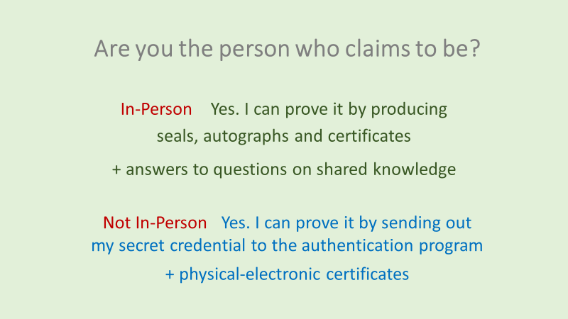

We hear “AI has both a bright side and a dark side. We should enhance the former and weaken the latter for developing responsible AI”
We cannot disagree but would like to add one more remark to it – “We should be prepared to fend off bad guys who attempt to exploit the dark side of AI”.
We all know that we cannot eliminate bad guys. We only can build the defense line against them. We must prepare against vicious AI deployed by malicious guys for malign objectives. Among the malicious guys are dictators and autocrats, and among the malign objectives is destruction of the values of democracy.
The domain we are active in is Digital Identity. Naturally we have an obligation to consider what we can do for the defence of democracy from digital identity’s view point.
AI Program with No Identity
AI might become extremely excellent in mimicking human thinking. Mimicked thinking, however, is just different to human thinking.
Human thinking is supported, reflected, influenced and inspired by humans’ internal/external body senses and emotion, feeling and mood that come from them, as well as history of social and personal experiences and time-honoured wisdom born from all of them. ‘Identity’ is made up of these elements which can hardly be an object of mathematical calculations.
Mimicked thinking may be feasible without Identity, but human thinking is never possible without Identity. Each separate AI program, if given an ‘identification code’, can never be an object of ‘Identity Authentication’. Should we mess up here, we might be walking on the road towards a digital dystopia.
We have to make it clear that we are facing the AI that does not have and will never obtain Identity.
Conclusion
What makes humans’ identity can make a defense against the perils of Identity-less Artificial Intelligence. What can contribute to the solid digital identity platform can also contribute to the solid defense line against the perils of vicious artificial intelligence.
References
Submit a Comment
Your email address will not be published.Required fields are marked *